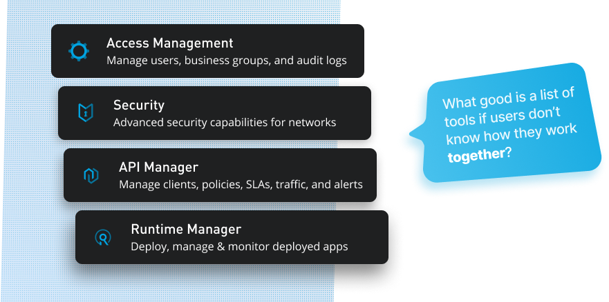
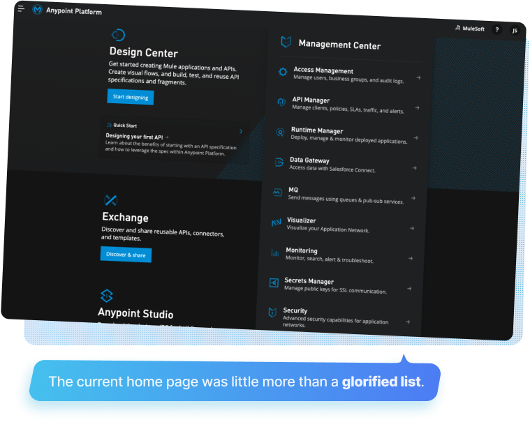
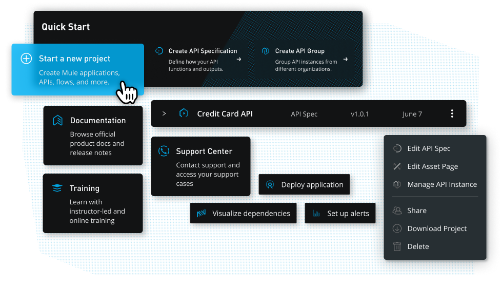

MuleSoft, Anypoint Platform
Improving workflow productivity and personalization on the leading integrations and API platform.
Duration
Summer 2020
Role
UX Design Intern, MuleSoft
Deliverables
UI/UX for Web App, User Research, Prototype
Platforms
Web
A platform is more than its products
For complex, time-sensitive projects, MuleSoft's Anypoint Platform offers dozens of compelling products in a fast and capable environment. For small and large teams alike, the Anypoint suite was more than enough to manage their integrations and APIs. However, what the platform excelled at in its products, it lacked in cohesiveness. Suites like Google Drive and Office 365 succeed in part because of their excellent tools, but perhaps more so because their users understand how those tools connect and function as a platform. This wasn't the case for Anypoint; users commonly excelled within certain tools, but failed to understand how these tools could work t ogether to create a more productive workflow.
Who needs a home page?
Internal research and user interviews showed us that most people didn't even use the Anypoint Platform’s home page. Most of them directly entered the first tool in their workflow and jumped between their necessary tools without ever touching home base. Was this efficient? Definitely not. But with most users being unaware of the best practices on the platform, they were left "hopping" between all of the different tools–often without direction.
Existing Problems
In order to get more context on the home page's problems, I consulted
previously conducted internal design reviews, user research on platform navigation, usability studies,
and had conversations with other MuleSoft workers who could speak from the perspective of our wide user base.
These contextual searches gave way to a few prominent issues, but one sentiment was more present than anything else:
feeling "lost". The lack of interconnectedness left users feeling lost when trying to find features, lost in a sea of
tools when trying to reach their projects, and ultimately confused–especially for newer users.
The journey over the destination
Armed with new sentiments and research, I hypothesized that helping our users find their place in the Anypoint Platform would require centering my designs around improving the user journey throughout the platform. This would come through establishing more contextual navigation, helping users consume their content rather than hop between tools, and reducing the barrier of entry for new users. Recentering the home page around workflows and projects should result in all users experiencing the MuleSoft promise of fast and easy integrations and APIs.
Pushing productivity first
The Anypoint Platform's core idea was that efficiency and interconnectedess are the basis for producing critical integrations and managing APIs at any scale. It was important that the experience also be focused around integrations and how tools can work together, rather than individually.
A new north star
It was clear that our users often got lost searching for important actions in the platform; they were hard to find as they were usually stashed away in menus within Anypoint's various tools. To alleviate these pains and give users a more centralized point of control, I designed a new "quick start" component. Using his, we could offer users personalized content guides and task flow starting points. This helps them jump into the platform more easily if they're a new user, or move through their work more efficiently if they're more experienced.
Faster and clearer work
To access their projects, users needed to dive into the navigation drawer's recent items or list or dive into their tool from the home page and then navigate further to their project. This not only slowed down their workflow, but more importantly, made users feel like their work was siloed into a bunch of different tools rather than on one fluid platform. Showing our users their most recent projects and suggesting potential next steps saves time and helps users understand how the web of tools collaborate.
Always learning and adapting
As a new intern at MuleSoft, I had to undergo a week of training in the Anypoint Platform to fully grasp its capabilities. It was through this training period where I realized the importance of a modular home page that could grow with the user. As most users don't have the same amount of experience with APIs and integrations, the home page will change which resources, quick start items, tools, and more that it displays. Additionally, the new home page changes how those items are displayed, ensuring that no user is left in the dark about any tool or functionality.
Productivity in motion
Platforms are about more than their tools. The most successful in the productivity
sector are often those that, along with polished and useful products, are easy for users to understand and grasp. For the Anypoint Platform,
users needed an anchor that could help them establish a deeper understanding of the platform while also adding long needed
features that could improve work flows. As I worked on this project, it became more and more about empowering users to see the platform
differently, rather than just a redesign. Ultimately, the redesign has received lots of positive feedback from the larger design team,
internal stakeholders, and representatives of customer groups. Hopefully, this can be the push in productivity that enables the
Anypoint Platform to reach new heights.
Here is an example prototype, view it in full screen for the best experience!
Another Project